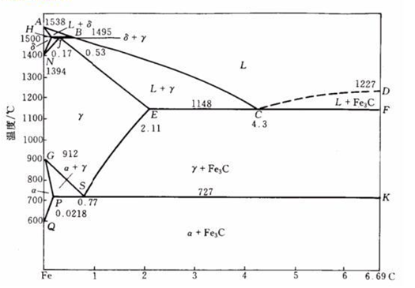
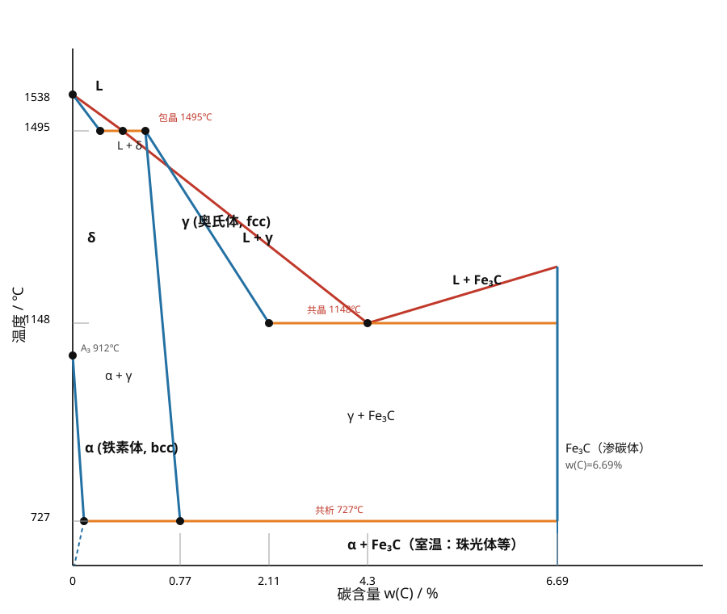
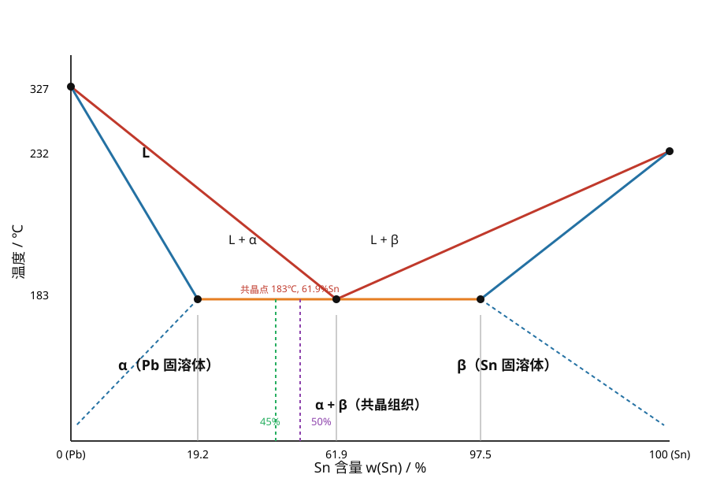

← 返回首页
# 材料科学基础 · 复习笔记
依据《材料科学基础-2026复习.pdf》与《材料科学基础习题-2026.docx》整理。
全书 8 章：原子键合 → 晶体结构 → 晶体缺陷 → 塑性变形与再结晶 → 扩散 → 单元系相变 → 二元系相图 → 三元系相图。
复习主线：背概念 → 记数字 → 会公式 → 能算题 → 会简答。
第 1 章 原子键合
核心概念
四个量子数
| 量子数 |
符号 |
决定什么 |
| 主量子数 |
n |
电子能量及与核的平均距离 |
| 角量子数 |
l |
轨道形状（亚层） |
| 磁量子数 |
m |
轨道空间取向 |
| 自旋量子数 |
ms |
电子自旋方向 |
电子排布时优先排布在能量最低的轨道（能量最低原理）。
键的类型
| 键型 |
本质 |
特点 |
| 金属键 |
正离子 + 自由电子云（电子共有化，属所有原子共有） |
无方向性、无饱和性；导电导热好 |
| 共价键 |
相邻原子共有价电子（属若干原子共有） |
有方向性、饱和性；C-H 键是共价键 |
| 离子键 |
正负离子静电吸引 |
电负性差大 |
| 范德华力 |
分子间作用力 |
物理键，很弱 |
| 氢键 |
分子间作用力 |
比范德华力强 |
极化：离子的变形（极化）使键性由离子键向共价键过渡，最终晶体结构类型发生变化。
记忆要点
- 物理键只有范德华力（氢键属于分子间作用力，可理解为弱键，但答题按讲义说法：物理键=范德华力）。
- 金属材料导电导热好；聚乙烯塑料等聚合物不导电不导热。
- 常见化学键归属：高分子中 C-H → 共价键；盐类 → 离子键；金属 → 金属键。
第 2 章 晶体结构
晶体 vs 非晶体
| 项目 |
晶体 |
非晶体 |
| 原子排列 |
规则 |
无序 |
| 性质 |
各向异性 |
各向同性 |
| 熔点 |
固定 |
无固定熔点 |
| 相同点 |
都是固态物体 |
|
空间点阵：由结点构成的空间总体。特点：阵点周围环境都相同、在空间的位置一定。
晶面指数 / 晶向指数（必考计算）
- 晶面指数（Miller 指数）求法：截距取倒数 → 互质整数 → 加圆括号 (hkl)
- 晶向指数：沿晶向取最近结点坐标差 → 互质 → 加方括号 [uvw]
- 晶面族
{hkl}、晶向族 <uvw>
- 立方晶系中，相同指数的晶面和晶向互相垂直（如 (111)⊥[111]）
例题：
- 截距 3a、2b、c → 倒数 1/3、1/2、1 → 通分 ×6 → (236)
- 截距 a、2b、2c → 倒数 1、1/2、1/2 → ×2 → (211)
晶胞与堆积（数字必背）
| 结构 |
每晶胞原子数 |
堆积系数 |
配位数 |
| 体心立方 bcc |
2 |
68% |
8 |
| 面心立方 fcc |
4 |
74% |
12 |
| 密排六方 hcp |
6 |
74% |
12 |
口诀：bcc 两个 68，fcc 四个 74，hcp 六个 74。
- 等径球紧密堆积：
- 六方最紧密堆积 = ABAB…
- 面心立方（立方最紧密）= ABCABC…
- 紧密堆积产生两种间隙：八面体间隙由 6 个球围成，四面体间隙由 4 个球围成。
- 金刚石 vs 石墨：同为碳原子，硬度天差地别，原因是晶体结构不同（不是成分、组织、工艺）。
第 3 章 晶体缺陷
缺陷分类（必考）
| 类别 |
维度 |
例子 |
| 点缺陷 |
0 维 |
空位、间隙原子、置换原子 |
| 线缺陷 |
1 维 |
位错 |
| 面缺陷 |
2 维 |
晶界、相界、孪晶界 |
- 溶质/杂质原子使晶格常数可能增大也可能减小（看溶质原子大小，不能一概而论）。
- 氮、氧原子半径小，能挤入金属间隙 → 形成间隙固溶体。
固溶体 vs 化合物
| 概念 |
关键判据 |
| 间隙固溶体 |
小原子溶入后仍保留大原子的点阵结构 |
| 间隙化合物（间隙相） |
小原子溶入后改变了大原子的点阵结构，形成新相 |
| 正常价化合物 |
金属与电负性较强的 IVA、VA、VIA 族元素按原子价规律形成 |
| 电子化合物 |
按电子浓度规律形成，结构与 A、B 组元都不同 |
位错（本章重头戏）
- 位错性质：
- 位错是已滑移区与未滑移区的边界；
- 位错线不一定是直线；
- 位错不能中断于晶体内部（只能终止于表面、晶界或形成位错环）——这是常考的不正确项；
- 柏氏矢量是点阵平移矢量（单位位错）。
- 位错类型：
- 刃型位错：b ⊥ 位错线
- 螺型位错：b ∥ 位错线
- 混合型位错：b 与位错线呈一定角度
- 单位位错（全位错）：
| 结构 |
单位位错 |
伯氏矢量大小 |
| fcc |
a/2⟨110⟩ |
√2/2·a |
| bcc |
a/2⟨111⟩ |
√3/2·a |
- 全位错：b 等于点阵矢量或其整数倍，滑移后原子排列不变；不全位错：b 不是点阵矢量整数倍。
- 位错能量 E ∝ b²：两根同向同大小位错合并，b 加倍 → 能量为原来的 4 倍（常考简答）。
- 位错的运动：
- 滑移：切应力 τ 作用下沿滑移面运动（刃、螺、混合位错都能滑移）→ 永久变形
- 攀移：刃位错垂直滑移面的运动（借助热缺陷，空位/间隙原子增殖或消失）
- 交滑移：螺位错受阻后转到相交的另一滑移面上继续滑移
- 弗兰克-瑞德源：两端被钉扎的位错段在切应力下弯曲、绕节点回转、正负螺位错抵消形成位错环，循环产生新位错环 → 位错增殖。
- 扩展位错：两个不全位错中间夹层错区，仍是线缺陷。
晶界与相界
- 小角度晶界：相邻晶粒位相差 < 10°；大角度晶界：> 10°。
- 共格相界：界面原子同时位于两相晶格结点上，两相晶格彼此衔接，界面原子为两相共有。
第 4 章 塑性变形与再结晶
滑移
- 塑性变形以滑移为主。
- 滑移系（滑移面 × 滑移方向）：
| 结构 |
滑移系数量 |
| fcc |
12 |
| bcc |
12（常答 48 个滑移系，考选择题记 12） |
| hcp |
3（少，故 hcp 塑性差、易孪生） |
- Schmid 定律：分切应力 τ = σ·cosφ·cosλ，cosφ·cosλ 称为取向因子（施密特因子），45° 时最大为 0.5。取向因子越大，分切应力越大。
- 软取向：滑移系与外力接近 45°（易滑移）；硬取向：偏离 45° 远（σs 大）。
- 几何硬化：滑移转动使晶面越来越远离 45°，滑移变难；几何软化：越来越接近 45°，变易。
- 切应力作用下，螺位错只能滑移（不能攀移）；刃位错才能攀移。
加工硬化与屈服
- 加工硬化（冷作硬化）：冷塑变形增大 → 强度硬度↑、塑性韧性↓。
- 消除加工硬化：再结晶退火。
- 屈服现象解释（两道理论，常考）：
1. 柯氏气团（Cottrell 气团）：溶质原子钉扎位错，挣脱需要大应力 → 上屈服点；挣脱后易动 → 下屈服点与平台。
2. 位错增殖理论：变形前可动位错密度低，需高应力维持应变速率（上屈服点）；变形开始后位错迅速增殖，应力突然下降（下屈服点）。
滑移 vs 孪生（6 条对比，常考）
| 项目 |
滑移 |
孪生 |
| 位移量 |
原子间距的整数倍 |
分数倍（小于一个原子间距） |
| 位向 |
晶体位向不变 |
位向改变，与基体镜面对称 |
| 临界切应力 |
小 |
大得多 |
| 变形速度 |
较慢 |
接近声速 |
| 变形量 |
大 |
小 |
| 结构倾向 |
fcc 易滑移 |
hcp 易孪生 |
| 相同点 |
都通过位错运动实现 |
|
回复 · 再结晶 · 晶粒长大（热加工过程）
| 阶段 |
组织变化 |
性能变化 |
| 回复 |
晶粒形状不变，位错空位大量减少 |
强度硬度略降、塑性略升、残余应力大大降低 |
| 再结晶 |
拉长/破碎晶粒 → 新的均匀细小等轴晶 |
强度硬度明显下降、塑性韧性大增、加工硬化消除、内应力全部消失 |
| 晶粒长大 |
晶粒明显长大变粗 |
强度、硬度、塑性、韧性都显著降低 |
- 再结晶温度：纯金属 T再 ≈ 0.4·T熔（K）。
- 临界变形度（约 2%～10%）：变形量很小（如 5%）时退火，只有局部形核 → 晶粒反而极粗大。80% 大变形 + 温度过高退火也会粗化。细化晶粒：足够大变形（80%）+ 较低温度（如 150℃）退火。
- 形变织构：塑性变形使各晶粒滑移面/方向向主形变方向转动，形成择优取向。变形引起的叫变形织构；再结晶后仍保持择优取向的叫再结晶织构。
- 典型案例（高锰钢鄂板钢丝断裂）：冷拔钢丝有加工硬化强度高；被红热鄂板加热到再结晶温度以上后发生再结晶、强度下降，承受不住重量而断裂。
第 5 章 扩散
菲克定律（必背表达式）
- 菲克第一定律（稳态扩散，浓度不随时间变）：J = -D·dρ/dx
- 菲克第二定律（非稳态扩散，浓度随时间变）：∂ρ/∂t = D·∂²ρ/∂x²
- 误差函数解（渗碳计算用）：(Ws − W) / (Ws − W0) = erf( x / (2√(Dt)) )
- Ws = 表面浓度；W0 = 初始浓度；W = 深度 x 处的浓度
- 稳态 = 各处浓度及浓度梯度不随时间改变。
扩散机制与规律
- 扩散机制：间隙扩散（C 在 Fe 中，最快）、空位扩散、直接换位扩散。
- 扩散驱动力 = 化学位梯度（不是浓度梯度！）。
- 三条路径的扩散系数：D表面 > D晶界 > D晶内，即 DS > DB > DL。
- 柯肯达尔效应：两侧原子扩散速率不等时，原始界面移向扩散速率较大的一方。若界面向 A 试样移动 → A 组元扩散速率更大。
- 上坡扩散：低浓度 → 高浓度（化学位驱动）；下坡扩散：高浓度 → 低浓度。
- 原子扩散：无新相产生；反应扩散：扩散使溶质浓度超过固溶体极限而形成新相。
影响扩散的因素
- 晶体致密度越低扩散越快；
- 温度越高扩散越快；
- 间隙扩散比空位扩散快；
- 表面、晶界扩散比晶内快；
- 应力改变化学位，影响扩散方向；
- 第三组元改变结合力与扩散激活能。
渗碳为什么选在奥氏体区（900～930℃）？
虽然 C 在 α-Fe（bcc）中的扩散系数比在 γ-Fe（fcc）中大 100 倍，但：
1. 奥氏体区温度高，加速扩散；
2. C 在奥氏体中的溶解度远大于铁素体——这是基本原因。
第 6 章 单元系相变原理
形核
- 凝固驱动力：液固自由能差；需要过冷。
- 均匀形核：靠结构起伏 + 能量起伏，在过冷液相中自发形核。
- 非均匀形核：依附固态杂质表面或器壁形核，界面能减小、形核功小，更容易，可在较小过冷度下获得较高形核率。
- 相同点：驱动力与阻力相同、临界半径相同、都要形核功、都要临界过冷度、形核率先随过冷度增加而增加。
- 临界晶核半径：r* = 2σ·Tm / (Lm·ΔT)（σ 固液界面能，Lm 熔化热，ΔT 过冷度）
- 临界形核功：ΔG* = 16πσ³ / (3ΔGv²)
- 临界核的界面能 = 3ΔG*（ΔG* = 1/3 界面能项）——常考关系题。
- r = r 时，体系的自由能变化 大于零（= 形核功 ΔG）**。
- 形核率随过冷度：先增加后降低（驱动力↑ 但原子活动能力↓，两个因素竞争）。
界面与相变
- 光滑界面（小平面界面）：原子尺度上光滑平整，液固截然分开；光学显微镜下呈曲折小平面。
- 一级相变：体积、熵、焓突变（奥氏体转变是一级相变）。
- 铸锭宏观组织三区：表层细晶区（激冷非均匀形核）→ 柱状晶区（单向热流枝晶延伸）→ 心部等轴晶区（散热无方向性，各向等速长大）。
- 结晶潜热大部分通过液相散失 → 液面前沿过冷大 → 树枝晶。
- 铝过冷度 ΔT=10℃ 时临界晶核 r ≈ 10 nm*（用公式代 Tm=993K, Lm=1.836×10⁹ J/m³, σ=93 mJ/m² 算）。
第 7 章 二元系相图
基本概念
- 相：同一聚集状态、同一晶体结构性质、以界面隔开的均匀组成部分。
- 组织：若干相以一定数量、形状、尺寸、分布组合成的具有独特形态的部分。单相组织有双重身份；组织侧重微观结构，相侧重存在方式。
- 杠杆定律只能用于两相区计算相对量。
- 平衡凝固：先凝固的固相中高熔点组元含量较高。
- 包晶转变 L + α → β：高熔点组元由 α 向 β 内扩散。
- 共晶两相共存条件：同种原子在两相中的化学势相等（如 α 中 Pb 的化学势 = β 中 Pb 的化学势）。
- 非平衡凝固：液固成分偏离相线，凝固在更低温度完成，成分不均匀（晶内偏析/枝晶偏析）。
- 枝晶偏析：非平衡凝固先凝固部分高熔点组元含量高，枝干与枝叶成分不同。
- 只有共析钢才有共析转变？不对。含碳 0.0218%～6.69% 的钢和铸铁冷却到 727℃ 时，奥氏体含碳量达到 0.77% 都会发生共析转变。
成分过冷（重要简答）
- 定义：凝固时溶质再分配使固液界面前沿溶质浓度变化，引起理论凝固温度改变，从而在界面前液相内形成过冷。
- 原因：液相溶质分布改变前沿凝固温度，实际温度低于溶质分布决定的凝固温度。
- 对界面形貌的影响：成分过冷由小到大：平面状 → 胞状 → 树枝状。
Fe-Fe3C 相图（重中之重）

上图直接取自习题答案的原图；复习 PDF 里的同一张原图在 images/Fe-Fe3C相图-复习PDF原图.png。
配套综合题原图：images/Fe-Fe3C-1.0C-结晶过程-原图.png（1.0%C 过共析钢平衡结晶过程）、images/Fe-Fe3C-1.0C-室温组织示意图-原图.png（室温组织示意图）。
下面是我画的简化标注版，方便记忆关键点：

三个关键温度（口诀：727 共析、1148 共晶、1495 包晶）：
| 转变 |
温度 |
成分（wt%C） |
反应式 |
| 包晶 |
1495℃ |
L 0.17、δ 0.09、γ 0.53 |
L + δ → γ |
| 共晶 |
1148℃ |
L 4.3、γ 2.11、Fe3C 6.69 |
L → γ + Fe3C |
| 共析 |
727℃ |
γ 0.77、α 0.0218、Fe3C 6.69 |
γ → α + Fe3C（珠光体） |
关键成分点：0.0218%（α 最大溶碳）、0.77%（共析）、2.11%（γ 最大溶碳）、4.3%（共晶）、6.69%（Fe3C）。
七类合金室温组织（必背）：
| 类别 |
成分范围 |
室温组织 |
| 工业纯铁 |
w(C) ≤ 0.0218% |
F + Fe3CIII |
| 亚共析钢 |
0.0218% ~ 0.77% |
P + F |
| 共析钢 |
0.77% |
P（珠光体） |
| 过共析钢 |
0.77% ~ 2.11% |
P + Fe3CII（网状） |
| 亚共晶白口铸铁 |
2.11% ~ 4.3% |
P + Fe3CII + Le′ |
| 共晶白口铸铁 |
4.3% |
Le′（莱氏体） |
| 过共晶白口铸铁 |
4.3% ~ 6.69% |
Fe3CI + Le′ |
渗碳体的三种形态（易混）：
| 名称 |
来源 |
形态/影响 |
| 一次渗碳体 Fe3CI |
共晶转变（液相析出） |
连续分布（莱氏体基体，鱼骨状） |
| 二次渗碳体 Fe3CII |
奥氏体析出 |
网状，使脆性增大、强度塑性韧性降低 |
| 三次渗碳体 Fe3CIII |
铁素体析出 |
短棒状/片状，微量 |
- 珠光体 = 铁素体 + 渗碳体，包含两种相（选择题常考：哪种组织含两相 → 珠光体）。
- 渗碳体：Fe 与 C 形成的复杂晶格间隙化合物，硬度高、塑性差（延伸率≈0）。
- 0.45%C 合金：少量共析渗碳体（片状，强化基体）+微量三次渗碳体；3.0%C 合金：大量共晶渗碳体（连续分布）+少量二次渗碳体（网状，降低强度）+共析渗碳体。
杠杆定律例题（Pb-Sn，45%Sn @183℃）

已知：α 端点 19%Sn、共晶点 61.9%Sn、β 端点 97.5%Sn。
- 先共晶 α初 = (61.9−45)/(61.9−19) ×100% = 38.3%；共晶 (α+β) = 61.7%
- α 相总量 = (97.5−45)/(97.5−19) ×100% = 67%；β 相 = 33%
50%Sn 合金：α初 ≈ 28%，(α+β)共 ≈ 72%；α 相 60.5%，β 相 39.5%。室温平衡组织：α初 + (α+β)共 + βⅡ。
渗碳时间计算示例
950℃ 渗碳，0.1mm 深处要 0.9%C，表面 1.20%C，D = 10⁻¹⁰ m²/s：
(1.20 − 0.9)/(1.20 − 0) = erf(x/2√(Dt))，查误差函数表解得 t ≈ 327 s（约 7.9 min）。
过共析钢平衡结晶过程（1.0%C）
L → L+γ → γ → γ+Fe3CII → P + Fe3CII（网状）
第 8 章 三元系相图
- 恒压相律：F = C − P + 1 = 4 − P，F=0 时 Pmax = 4（三元合金最多四相共存）。
- 三相区等温截面：连接的三角形，顶点触及单相区（相区接触法则：相邻相区相数差 1）。
- 垂直截面图：可分析材料的平衡凝固过程，但不能用杠杆定律计算各相相对量（成分未知）。
- 三元共晶四相平衡区：形状为三角形；上方连 3 个三相区（L+α+β、L+β+γ、L+α+γ），下方连 1 个三相区（α+β+γ）；不与两相区或单相区相连（相数差 1）。
- 计算题套路（杠杆定律在直线上的投影）：已知 WB/WL、液相 B 含量、A/C 比值，联立解得合金成分。
- 例：WB/WL = 2 = (XB−40)/(100−XB) → XB = 80%；X A + X C = 20% 且 XA/XC = 3 → K 合金 = 15%A + 80%B + 5%C。
全书速记卡（考前 10 分钟）
数字类
| 数字 |
含义 |
| 2 / 4 / 6 |
bcc / fcc / hcp 每晶胞原子数 |
| 68% / 74% |
bcc / fcc（hcp）堆积系数 |
| 3 / 12 / 12 |
hcp / fcc / bcc 滑移系 |
| 45° |
Schmid 取向因子最大 0.5 |
| 0.4 Tm |
纯金属再结晶温度（K） |
| 2%～10% |
临界变形度（退火晶粒粗大） |
| <10° / >10° |
小角度 / 大角度晶界 |
| 727 / 1148 / 1495℃ |
共析 / 共晶 / 包晶 |
| 0.77 / 2.11 / 4.3 / 6.69% |
共析 / γ最大溶碳 / 共晶 / Fe3C 含碳 |
| √2/2 a、√3/2 a |
fcc、bcc 单位位错 b 大小 |
| 4 倍 |
两根同向位错合并后能量 |
| 327 s |
950℃ 渗碳例题时间 |
| 10 nm |
铝 ΔT=10℃ 临界晶核半径 |
易混对比一句话
- 晶体各向异性有固定熔点；非晶体各向同性无固定熔点。
- 间隙固溶体保留大原子点阵；间隙化合物改变点阵形成新相。
- 滑移位向不变、整数倍原子间距；孪生位向改变成镜面对称、分数倍位移。
- 再结晶消除加工硬化；回复主要消除残余应力。
- 上坡扩散去高化学位（低浓度→高浓度），下坡扩散相反。
- 反应扩散有新相，原子扩散无新相。
- 柯肯达尔界面移向扩散快的一方。
- 共析转变不是共析钢专利，0.0218%～6.69% 都会发生。
- 三元垂直截面能看凝固过程，不能算杠杆。
高频简答题速答清单
- 渗碳为何选奥氏体区：溶解度大 + 温度高加速扩散。
- 屈服现象：柯氏气团钉扎 + 位错增殖导致应力降落。
- 钢丝断裂：加工硬化的钢丝被加热发生再结晶，强度骤降。
- 均匀 vs 非均匀形核：非均匀形核借助杂质/器壁，界面能小、形核功小，更易。
- 成分过冷对界面影响：平面 → 胞状 → 树枝状。
- 铸锭组织：表层细晶 + 柱状晶 + 心部等轴晶。
- 滑移 vs 孪生：见第 4 章 6 条对比表。
- 几何硬化 vs 软化：转动后远离 45° 变难（硬化）；接近 45° 变易（软化）。
- 弗兰克-瑞德源：钉扎位错弯曲 → 绕节点回转 → 抵消成环 → 循环增殖。
- 影响扩散因素：致密度、温度、机制、路径、应力、第三组元。